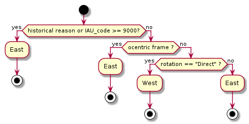

Purpose of the Software¶
Workflow¶
csvForWKT is a python script that creates a WKT-crs for solar system bodies. The physical content of the WKT-crs comes from the IAU Working Group on Cartographic Coordinates and Rotational Elements report.
The workflow to generate the WKTs is described as follows:
![start
:Skip records from IAU report;
:Split bodies;
if (biaxial?) then (yes)
:Compute planetocentric description for sphere using median radius
for Interoperability case;
:Add this CRS in the list;
if (is a body a Sphere?) then (yes)
else (no)
:compute planetocentric CRS;
:Add this CRS in the list;
endif
if (is a body a Sphere and (historical reason or retrograde movement) ?) then (yes)
else (no)
:Compute planetographic CRS;
:Add this CRS in the list;
endif
else (no)
:Create planetocentric description for sphere using median radius
for Interoperability case;
:Add this CRS in the list;
:compute planetocentric CRS;
:Add this CRS in the list;
:Compute planetographic CRS;
:Add this CRS in the list;
endif
:merge CRS;
:Compute projected CRS;
stop](_images/plantuml-faa1e5a3f2a79d8e89dd3dda48b3017e03beb5d5.png)
Positive longitudes¶
- One body can be defined by one of the two following shapes:
a biaxial body
a triaxial body
- At each shape, we can define three reference frames :
planetocentric frame with a sphere for interoperability purpose
planetocentric frame
planetographic frame
For a spherical shape, the planetocentric latitude and the planetographic latitude are identical. So a planetographic latitude is used.
Planetographic longitude is usually defined such that the sub-observer longitude increases with time as seen by a distant, fixed observer
Positive logitudes in one direction are defined with the following rule

Positive longitude rules¶
List of projections¶
The list of supported projections is defined as below :
Table of projections¶
Code |
Projection name |
|---|---|
10 |
|
15 |
|
20 |
|
25 |
|
30 |
|
35 |
|
40 |
|
45 |
|
50 |
|
55 |
|
60 |
|
65 |
|
70 |
|
75 |
|
80 |
|
85 |
Detailed description for Equirectangular, clon = 0¶
Projection code: 10
Projection name: Equirectangular, clon = 0
Projection method: Equidistant Cylindrical
Latitude of 1st standard parallel: 0
Longitude of natural origin: 0
False easting: 0
False northing: 0
Detailed description for Equirectangular, clon = 180¶
Projection code: 15
Projection name: Equirectangular, clon = 180
Projection method: Equidistant Cylindrical
Latitude of 1st standard parallel: 0
Longitude of natural origin: 180
False easting: 0
False northing: 0
Detailed description for Sinusoidal, clon = 0¶
Projection code: 20
Projection name: Sinusoidal, clon = 0
Projection method: Sinusoidal
Longitude of natural origin: 0
False easting: 0
False northing: 0
None: None
Detailed description for Sinusoidal, clon = 180¶
Projection code: 25
Projection name: Sinusoidal, clon = 180
Projection method: Sinusoidal
Longitude of natural origin: 180
False easting: 0
False northing: 0
None: None
Detailed description for North Polar¶
Projection code: 30
Projection name: North Polar
Projection method: Polar Stereographic (variant A)
Latitude of natural origin: 90
Longitude of natural origin: 0
Scale factor at natural origin: 1
False easting: 0
False northing: 0
Detailed description for South Polar¶
Projection code: 35
Projection name: South Polar
Projection method: Polar Stereographic (variant A)
Latitude of natural origin: -90
Longitude of natural origin: 0
Scale factor at natural origin: 1
False easting: 0
False northing: 0
Detailed description for Mollweide, clon = 0¶
Projection code: 40
Projection name: Mollweide, clon = 0
Projection method: Mollweide
Longitude of natural origin: 0
False easting: 0
False northing: 0
None: None
Detailed description for Mollweide, clon = 180¶
Projection code: 45
Projection name: Mollweide, clon = 180
Projection method: Mollweide
Longitude of natural origin: 180
False easting: 0
False northing: 0
None: None
Detailed description for Robinson, clon = 0¶
Projection code: 50
Projection name: Robinson, clon = 0
Projection method: Robinson
Longitude of natural origin: 0
False easting: 0
False northing: 0
None: None
Detailed description for Robinson, clon = 180¶
Projection code: 55
Projection name: Robinson, clon = 180
Projection method: Robinson
Longitude of natural origin: 180
False easting: 0
False northing: 0
None: None
Detailed description for Tranverse Mercator¶
Projection code: 60
Projection name: Tranverse Mercator
Projection method: Transverse Mercator
Latitude of natural origin: 0
Longitude of natural origin: 0
Scale factor at natural origin: 1
False easting: 0
False northing: 0
Detailed description for Orthographic, clon = 0¶
Projection code: 65
Projection name: Orthographic, clon = 0
Projection method: Orthographic
Latitude of natural origin: 0
Longitude of natural origin: 0
False easting: 0
False northing: 0
Detailed description for Orthographic, clon = 180¶
Projection code: 70
Projection name: Orthographic, clon = 180
Projection method: Orthographic
Latitude of natural origin: 0
Longitude of natural origin: 180
False easting: 0
False northing: 0
Detailed description for Lambert Conic Conformal¶
Projection code: 75
Projection name: Lambert Conic Conformal
Projection method: Lambert Conic Conformal (2SP)
Latitude of false origin: 40
Longitude of false origin: 0
Latitude of 1st standard parallel: 20
Latitude of 2nd standard parallel: 60
Easting at false origin: 0
Northing at false origin: 0
Detailed description for Lambert Azimuthal Equal Area¶
Projection code: 80
Projection name: Lambert Azimuthal Equal Area
Projection method: Lambert Azimuthal Equal Area
Latitude of natural origin: 40
Longitude of natural origin: 0
False easting: 0
False northing: 0
Detailed description for Albers Equal Area¶
Projection code: 85
Projection name: Albers Equal Area
Projection method: Albers Equal Area
Latitude of false origin: 40
Longitude of false origin: 0
Latitude of 1st standard parallel: 20
Latitude of 2nd standard parallel: 60
Easting at false origin: 0
Northing at false origin: 0
How the IAU code is created¶
The IAU code is created according to this relation:
<naif_code> * 100 + <x_crs> + <code_projection>
where :
x_crs = 0 for SPHERE Ocentric
1 for ELLIPSE Ographic
2 for ELLIPSE Ocentric
3 for TRIAXIAL Ographic
4 for TRIAXIAL Ocentric
code_projection is one of the code in the projection table